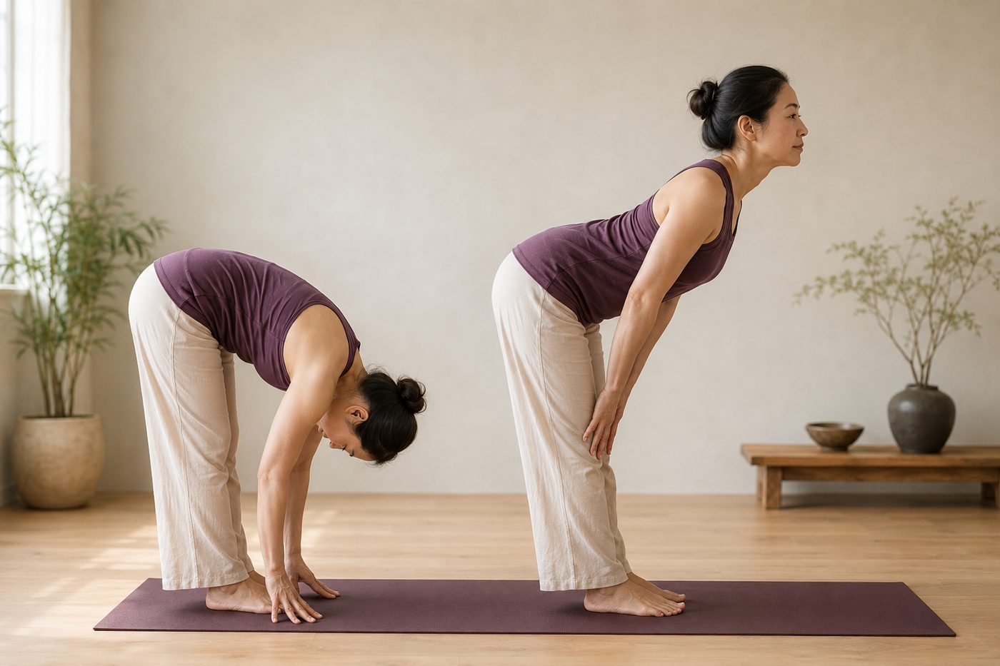

「一節一節捲起來」站直，真的會傷脊椎嗎？

有人斬釘截鐵跟你說：「站起來千萬別圓背，會傷脊椎！」；也有老師把「一節一節捲起來」當成很厲害的招式在教。到底該信誰？先別急著站隊——這件事真正的答案，其實藏在「你的脊椎是誰的脊椎」裡。
先看懂：兩種極端的恐慌，其實都不準
關於「捲脊椎」，網路上通常吵成兩派。一派說脊椎絕對不能彎、一彎就會受傷，聽起來很嚇人；另一派把逐節捲起捲下講得像萬靈丹，好像每個人都非練不可。這兩種說法，都把事情講得太滿了。
「脊椎不能彎」這個恐懼，多半是從「重量訓練」的情境搬過來的——當你背著很重的槓鈴、又快又猛地圓背，椎間盤確實承受不小的壓力，這時候教練叫你保持脊椎中立，沒錯。但問題來了：你只是徒手、慢慢、有控制地把身體捲下去再捲起來，跟背著槓鈴閃到腰，是完全不同的兩件事。脊椎本來就是設計來彎的，它有生理弧度、有二十幾節可以活動的椎體；把「負重又快速圓背」的警告直接套到「徒手慢捲」身上，就像因為有人開快車出事，就說走路很危險一樣。
對健康脊椎來說，一節一節捲，其實是在「練控制」
當你低頭、收下巴，從頸椎、胸椎一路捲到腰椎，一節接著一節往下，這個動作在訓練的是「脊椎逐節的控制與覺察」——身體要能感覺到每一節椎體分開移動，而不是整條背像一塊木板一起倒下去。
這件事很仰賴脊椎旁邊一群小小的深層肌肉，尤其是多裂肌，它一節一節跨在椎體之間，負責最細微的穩定；還有腹橫肌像天然的束腹，從裡面把腰桿撐住。捲的過程大概是這樣：
- 捲下去時，前側的腹部肌群要「離心」控制，讓你慢慢下降，而不是被地心引力拉著整個人掉下去；
- 捲起來時，深層的多裂肌和豎脊肌一節一節把椎體疊回去，重新找回站直的弧度；
- 全程搭配吐氣，核心自然收、肩頸不聳，這也是為什麼很多人捲完，反而覺得背鬆了。
所以對一副健康的脊椎來說，慢慢捲不只不傷，還是很好的「本體覺察」練習——你會愈來愈清楚自己的背在空間裡怎麼移動，這種控制力，在很多動作裡都用得上。
問題很少出在「脊椎彎了」，而是出在「有沒有控制、有沒有負重、你是不是高風險族群」。
那為什麼有人捲一捲，反而閃到腰？
因為「多數人安全」不等於「每個人都安全」。下面這幾種情況，捲脊椎確實要特別小心，甚至先避開：
- 急性下背痛期：正在痛、一彎就更痛的時候，往前捲會加重刺激，這不是練控制的時機；
- 椎間盤突出：脊椎往前彎會讓椎間盤前側受壓、把內容物往後推，可能壓到神經，這類族群通常要避免反覆的前彎捲動；
- 嚴重骨質疏鬆：椎體在前彎時前緣承受壓力，骨質脆弱的人有壓迫性骨折的風險，一般會建議避免脊椎前彎。
這些情況要站起來，更安全的做法是「摺髖」：脊椎保持中立、不刻意彎，讓動作發生在髖關節，靠臀大肌和大腿後側的膕旁肌出力，把身體帶回直立。想更完整了解這個關鍵動作，可以看看前彎的關鍵是先摺髖這篇。
這也是壁繩很好用的地方。捲脊椎最怕的兩件事，是「失控地掉下去」和「不知道自己到底彎到哪」；而壁繩可以幫你分擔一部分體重、給你一個穩定的支撐點，讓你能更慢、更有覺察地一節一節移動。對前面提到的高風險族群，繩子的借力也能讓你用比較中立、有保護的方式起身，而不是硬撐。想先認識這個工具，可以看認識壁繩瑜伽。
不確定自己該「慢慢捲」還是「先摺髖」？先看清楚自己的脊椎
來教室做一次 AI 體態檢測（現場做），老師會看你的脊椎弧度、骨盆位置和活動習慣，幫你判斷哪一種起身方式對你最安全，再給對應的練法。
加 LINE，預約檢測（首次 $199）→今天可以先記住的一件事
「一節一節捲起來會不會傷脊椎？」的答案不是「會」或「不會」，而是「看情況」。脊椎天生就會彎，對多數健康的背來說，慢慢地、有覺察地、不背重量地捲，反而是很棒的控制練習；但如果你正在急性下背痛、有椎間盤突出或嚴重骨鬆，就先用摺髖的方式起身，別勉強。給自己一點時間循序漸進，先求慢、求穩、求有感覺，再談做到哪裡——這從來不是一次就要到位的事。身上有任何不確定或舊傷，讓專業的人先幫你看過再練，永遠是最安心的做法。
本頁為體態與姿勢的一般衛教與練習分享，非醫療診斷或治療。若有疼痛、舊傷或特殊病史，請先諮詢合格醫療專業人員。